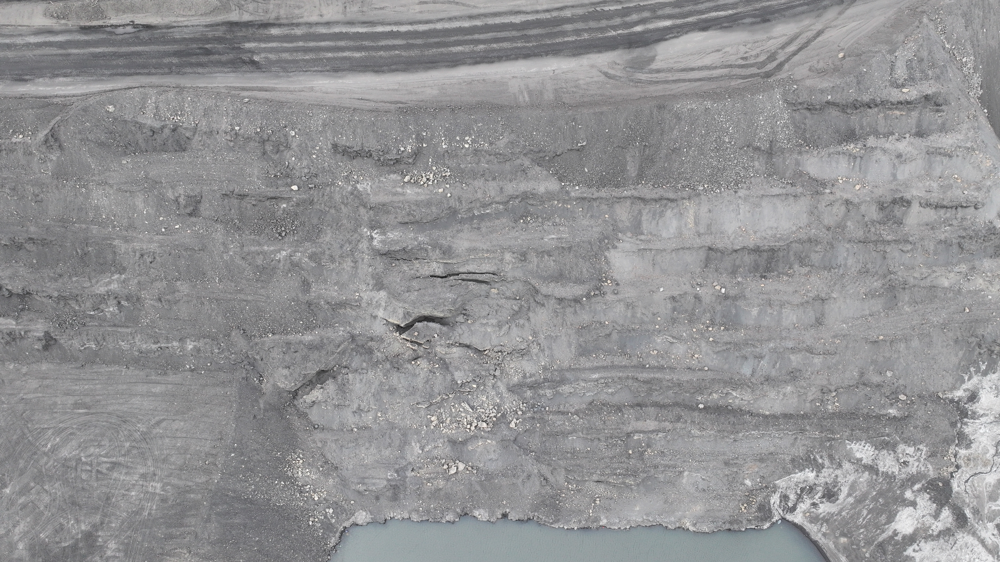

GT Hazard-8
Стрип 119-130 уурхайн баруун өндөр хананы ирмэг дагуу 15-20м зайд, Барууннаран уурхайн нүүрс тээврийн засмал зам дээр 135м болон замын хөвөө дагуу 600м орчим үргэлжлэх цууралтууд үүссэн. Гадарга дээр хэд хэдэн цууралтууд байгаа ба мониторинг хийх зорилгоор экстенсометр байршуулан хэмжилтийг тогтмол хийж байна. Тухайн бүсэд ажиллахдаа батлагдсан эрсдэлийн үнэлгээний дагуу ажиллах. Strip#119-130 along the edge of the south-west highwall of the mine at a distance of 12-20m, coal transportation of the Baruunnaran mine 135m long cracks appeared on the paved road and 600m along the road edge. There are cracks on the surface, and we have installed a extensometer to monitor them and perform regular measurements. Work only in accordance with the approved risk assessment when operating in the area.
GT Hazard-1A
GT Hazard-1A дээр үүссэн цууралт зүүн тийш тэлэн урд хэсгийн 3А нүүрсний давхраас дээр гулсалт явагдаж шинээр хэд хэдэн цууралтууд үүссэн. Гадарга дээр үүссэн цууралтад мониторинг хийх зорилгоор кракметр болон экстенсометрийн багажийг байршуулан хэмжилтийг тогтмол хийж байна. Тухайн хэсэгт ажиллах тохиолдолд геотехникийн инженерийн зөвлөмжийн дор эрсдлийн үнэлгээний дагуу ажиллана. The rupture GT Hazard-1A propagated eastward and series of new ruptures were formed by sliding above the coal seam in the front of the mine. For the purpose of monitoring the cracking crackmeter and extensometer instrument are placed and measurements are made regularly. In that section work according to risk assessment under the recommendation of a geotechnical engineer.
GT Hazard-1B
Уурхайн урд хэсгийн 0C нүүрсний давхраас дээр өмнө нь гулсалт явагдсан бүс. 2023.09.01-ны өдөр GT Hazard-1B аюултай бүсэд шинээр цууралт үүсч дахин гулсалт явагдсан. Гадарга дээр үүссэн цууралтын шилжилт хөдөлгөөн эрчим хурдацтай нэмэгдэж мониторингийн үр дүнгээр TARP-3 түвшин рүү шилжсэн. Тухайн аюултай бүсийн хүрээн дотор хүн болон техник нэвтрэхийг хориглосон ба геотехникийн инженер өдөр тутмын үзлэгийг хийж байна. A sliding hazard zone on the 0C coal seam at the southern part of the mine. GT Hazard-1B cracked on September 1, 2023, after a slope slip occurred. The intensity of crack migration on the surface increased rapidly and according to the monitoring, it moved to TARP level 3. Entry of people and equipment inside the danger zone is prohibited. Since foot inspection is not possible, the geotechnical engineer performs daily visual inspection.
GT Hazard-21
1490-н түвшин, strip#136 баруун урд хэсэгт өгөршлийн бүсэд өгөршсөн материал доош нурж, дэд доголын хэмжээний нуралт үүссэн. Нуралт үүссэн дэд доголын өндөр 8м ба 12м урттай. Тухайн дэд доголын хажуугийн урссан материалыг өндөрийн зөрүү үүсэхээс өмнө ачилт хийх. Эрсдэл бүхий талбайн үзлэгийг "TARP"-ын дагуу тогтмол хийх. At level 1490m, strip#136, in the weathering zone, weathered material has collapsed and formed a sub-bench-sized failure. The collapsed sub-bench was 8m high and 12m long. The material flowing from the side of the sub-slope should be removed before a height difference occurs. Regular TARP monitoring and inspection are required, and JHA should be performed when working near a hazard area.
GT Hazard-23
1402-н түвшин, strip#133-114 25-ийн налуу замын доод хажуугийн хэврэг материал OCUU нүүрсний тааз дээр гулсаж нуралт үүссэн. Нуралтын өндөр 12м, 81м урт үргэлжилж, 1м орчим доош суулт үүссэн. Нуралтын материалаас 5м зайд хамгаалалтын хөмсөг байрлуулах шаардлагатай. At the 1402 level, strip #133-114, a slope failure occurred on the lower side of the 25-ramp due to sliding of loose material from the OCUU coal seam roof, resulting in a failure. The slope failure measured 12m in height, extended 81m in length, and experienced approximately 1m of subsidence. A 2m safety bund should be built 5m away from the failed material. Regular TARP monitoring and inspection are required, and JHA must be performed when working near the hazard area.
GT Hazard-24
1280-н түвшин, strip#128 хойд хэсэгт тээврийн замын хажуугийн нүүрэн талд цууралт үүсэж, 3А нүүрсний үелэл хоорондын материалд суулт явагдсан. Цууралт 40м урт үргэлжилж, 30 см орчим суулт үүссэн. Эрсдэл бүхий талбайн үзлэгийг "TARP"-ын дагуу тогтмол хийх. At the 1280 level, on the northern side of strip #128, a crack developed on the exposed face adjacent to the ramp, accompanied by sliding in the interburden material between the 3A coal seams. The bench measured 51m in height, the crack extended 40m in length, and subsided about 30cm. Regular TARP monitoring and inspection are required, and JHA should be performed when working near the hazard area.
GT Hazard-26
1478-н түвшин, strip#131-132 хэсэгт хагарал орчмын тогтворгүй бүсэд ирмэг дагуу цууралт үүсч суларсан материалд суулт өгсөн. Цууралтын урт 35м, 1м орчим суулттай. Тухайн хэсгийг хамгаалалтын хөмсгөөр тусгаарлах шаардлагатай. Эрсдэл бүхий талбайн үзлэгийг "TARP"-ын дагуу тогтмол хийх. At RL 1478m, strip#131-132, in an unstable area around a fault, a crack has formed along the edge and subsidence has occurred in the sheared material. The height of the bench was 20m, the crack extended 35m in length, and subsided about 1m. A safety bund must be constructed around the hazard. Regular TARP monitoring and inspection are required, and JHA should be performed when working near the hazard area. Any new cracks or movements must be reported immediately to a geotechnical engineer.